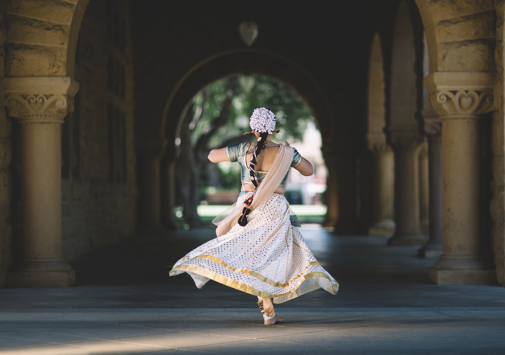
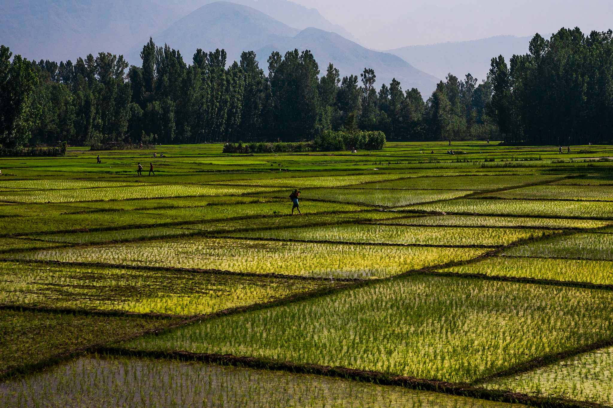
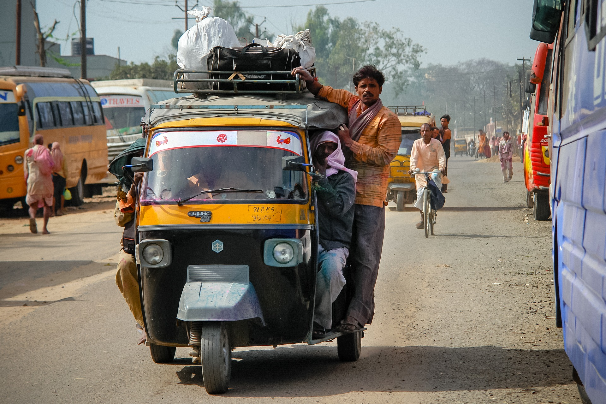
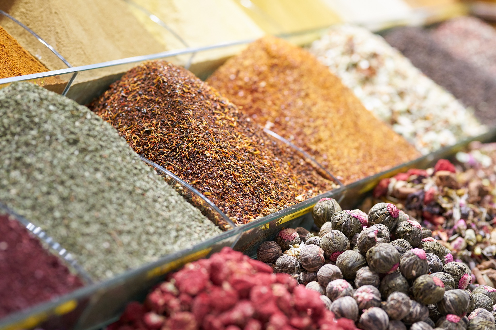
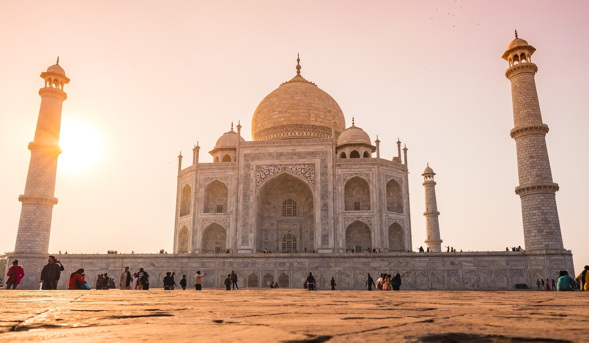

Growing up, I would visit India with my family every couple of years. This was my first solo trip to India and was so a unique experience. If you have the opportunity to take a solo-trip somewhere I highly recommend it!

Some local children where outside after school, and asked me to take their picture
I saw this woman dancing one day while I was walking outside, and thought it was a great shot to capture

Traditional Indian food, what I look forward to most when visiting

I cute monkey I saw, while out one day!
Rice is a huge staple in Indian cuisine, India is also one of the major suppliers of rice throughout the world.
A Rickshaw! The best way to get around town in India.

The Ganges River, a very popular spot for tourists and locals.
I love Indian food because of the complex flavors and spices.
A beautiful site! It was so interesting to learn the history of the Taj Mahal.

A beautiful temple in India.
I'm hoping to go back next year, there is still so much I want to see and experience!